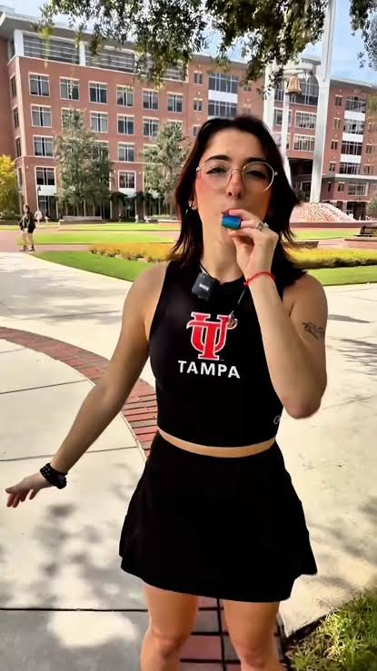

Understanding who uses our site shapes every navigation, label, and pathway decision.
These four personas represent meaningful differences in transportation needs, goals, and behaviors that will guide the information architecture of the Move Downtown Tampa website.

Primary Persona · 34 · Downtown Finance Employee
Finance professional who lives and works in Downtown Tampa. Commutes regularly and actively seeks alternatives to driving to save time and money.
34 years old, male, lives in a downtown apartment, works as a financial analyst/manager in a downtown office building.
Uses his smartphone in the morning while getting ready or during his commute planning. Values efficiency and reliability. Often checks options the night before or while walking out the door.
Secondary Persona · 21 · University of Tampa Student
University of Tampa student who lives near campus and frequently travels between classes, housing, restaurants, and downtown destinations. Prioritizes low or no cost options.
21 years old, female, undergraduate student at University of Tampa, lives in student housing near campus, does not regularly own or use a car.
Primarily uses her smartphone while on the go. Time-constrained between classes. Highly sensitive to cost. Values clear, simple information that loads quickly.
Secondary Persona · 42 · Technology Manager & Downtown Resident
Technology manager who lives in Downtown Tampa. Has access to a car but prefers convenient, lower-stress options for local trips related to dining, errands, and recreation.
42 years old, female, technology manager, downtown resident, owns a car but seeks alternatives for short urban trips.
Uses smartphone or laptop from home in the evening or on weekends. Values convenience and clear information about travel time and accessibility.
Secondary Persona · 38 · Downtown Business Visitor
Business traveler visiting Downtown Tampa for a conference or meetings. Unfamiliar with local transportation systems and needs quick, reliable guidance.
38 years old, male, business visitor staying at a downtown hotel, limited time, unfamiliar with Tampa's transit network.
Uses smartphone while at his hotel or on the go. Time-limited visitor who values simplicity and clear labels. May be a first-time visitor to the area.
Primary Persona: Michael Reynolds
Michael is the primary focus because he represents the core daily user of the site — a downtown resident/employee who regularly needs to compare transportation options for commuting. His consistent need to evaluate trade-offs between time, cost, and convenience directly drives the site's comparison features, filters, and the "Getting Around" overview page. Designing for Michael ensures the site efficiently supports the most frequent and high-value tasks, which will also benefit other users.
The most important tasks for Michael (and supported for others) include:
Sophia needs quick low-cost options, Danielle needs convenient local alternatives, and David needs simple orientation — all of which are supported by the same comparison and pathway structure.
Content is organized into four clear categories: Walking, Biking, Public Transit, and Shared Transportation. A dedicated Getting Around page highlights available options and helps users choose what best suits their needs.
This structure works for Michael (compare daily commute options), Sophia (find cheap routes from campus), Danielle (convenient local alternatives), and David (quick overview of choices).
Navigation is consistent across all pages with main menu options: Home, Getting Around, Walking, Biking, Public Transit, Shared Transportation, and Learn.
This allows Michael to jump directly to Public Transit, Sophia to quickly access Walking and Biking paths, and Danielle or David to start on the Getting Around page for an overview without hunting through the site.
The site uses clear, self-explanatory labels such as Walking, Biking, and Public Transit rather than technical terms like "Pedestrian Mobility" or "Collective Transportation Infrastructure."
This consistency with the controlled vocabulary supports David (who is unfamiliar with Tampa) and Sophia (who wants to accomplish tasks quickly on her phone). Michael can immediately recognize transportation types without deciphering jargon.
Users start with a prominent search: "Where do you want to go?" They can then view and refine options using filters for type of transportation, cost, time, etc.
Examples:
These pathways move users efficiently from destination to mode selection, supporting the specific goals of each persona.